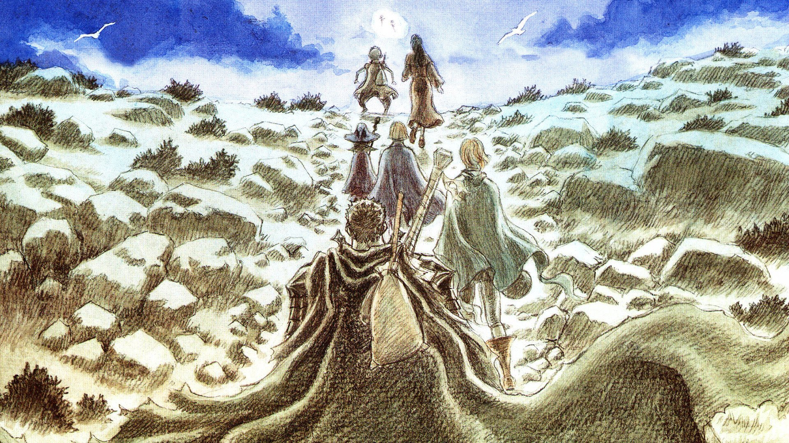
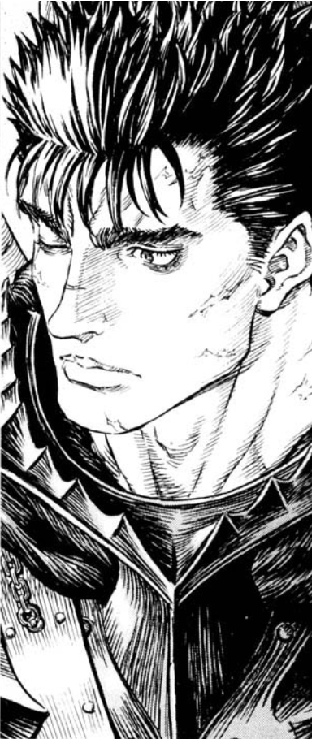
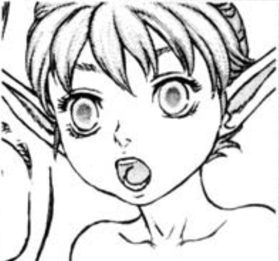
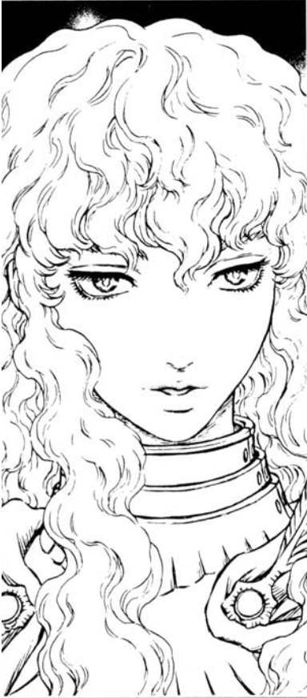
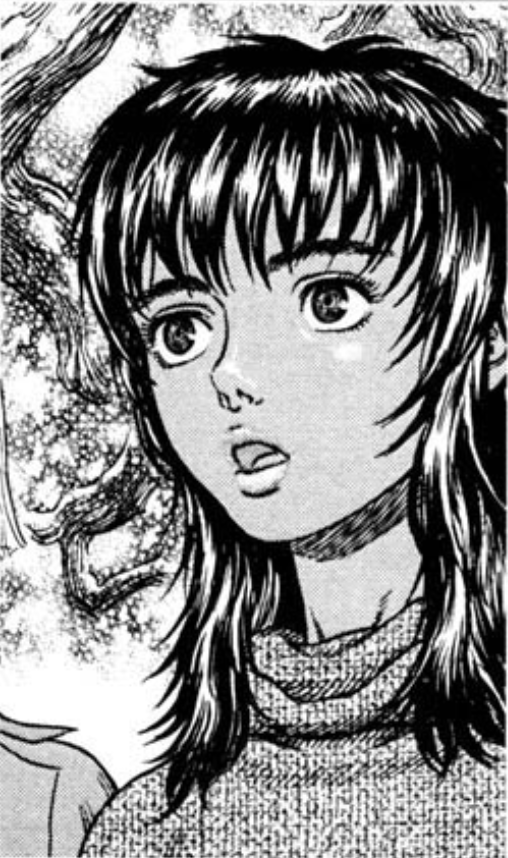
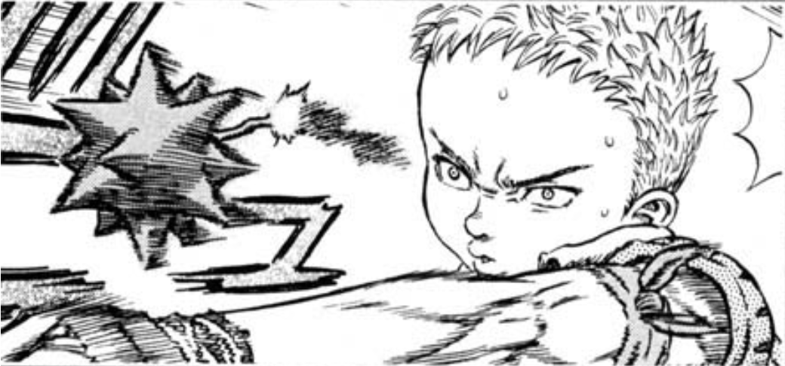
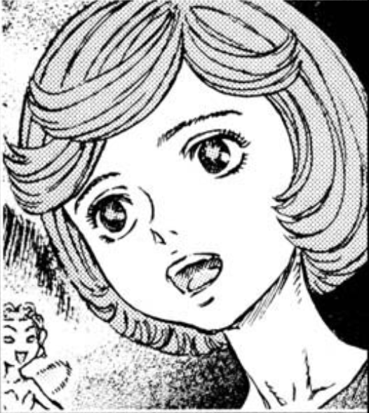
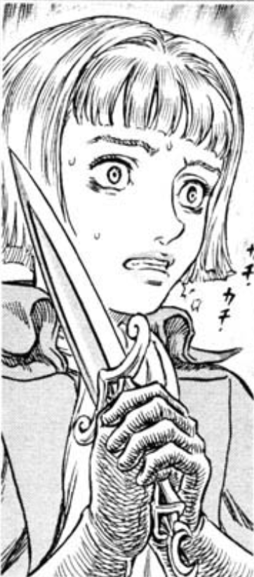
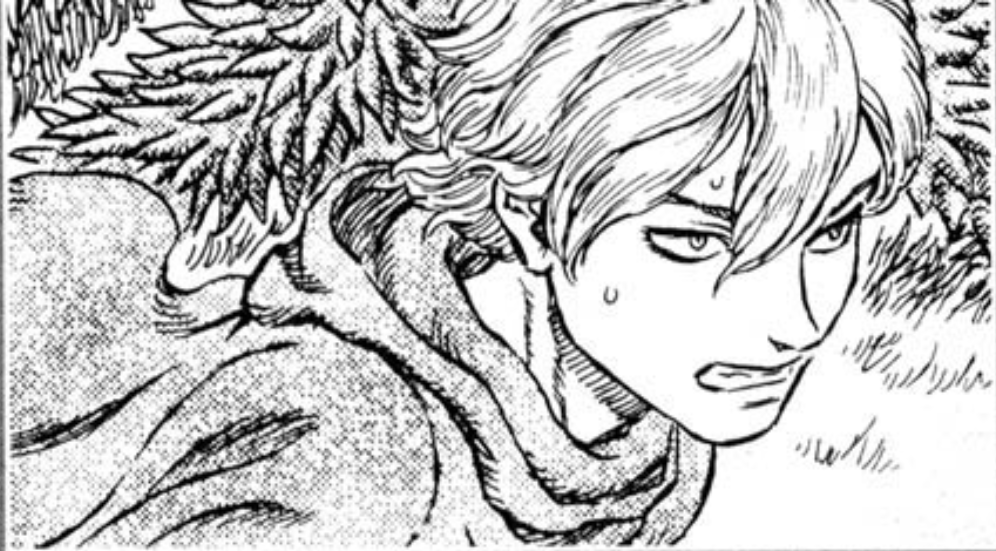

О Гатсе и его компаньонах
Гатс
Главный герой. Черный мечник живущий в "Промежутке". Смыслом его жизни стало желание защищать Каску и отомстить Гриффиту. Одним словом - Герой.
Гатс, известный как «Чёрный мечник», — бывший наёмник — клеймлённый странник, который путешествует по миру в постоянной внутренней борьбе между преследованием собственных целей и поддержанием своих привязанностей к тем, кто ему дорог.
Пережив Затмение, Гатс становится мстительным, желая лишь выследить и убить любого встречного апостола, а главное — отомстить Гриффиту и Руке Бога. Он оставляет регрессировавшую Каску на два года, чтобы вступить на тропу войны с демоническим родом. Во время двухлетней охоты Гатс становится эгоцентричным и антисоциальным, равнодушным к страданиям других и ненавидящим тех, кого он считает слабыми.
Пак
Эльф уже давно путешествующий с Гатсом. Пыльца с его крыльев исцеляет раны. Недавно оказалось что Пак является духом воздуха, одним из видом стихийных элементалей.
Пак - это причудливое и беззаботное присутствие, которое выделяется в темном и неумолимом мире, в котором он живет. Таким образом, он полностью отличается от своего партнера по путешествиям Гатса.Пак предпочитает находить неотъемлемое благо в тех, кого встречает, а не отвергать их за то, что он изначально видит. Таким образом, Пак проявляет большое терпение, имея дело с менее уважаемыми персонажами, особенно в первые дни его путешествий с Гатсом, когда он подвергался постоянным словесным (а иногда и физическим) оскорблениям Гатса. Пак в конце концов обнаружил, что он обладает какой-то моралью и поводом для своих дерзких поступков.
Гриффит
один из главных героев серии «Берсерк», когда-то лучший друг Гатса, позже заклятый враг. Гриффит, одержимый мечтой о собственном королевстве, создал отряд Сокола, где служили Гатс, Каска и их друзья. Благодаря военным талантам Гриффита и доблести его друзей «Соколы» одержали множество побед.
В конце «Золотого века» Гриффит отдал своих друзей в жертву демонической Длани Господа в обмен на право занять место в ее рядах, и действительно переродился в образе демонического существа по имени Фемто. Гатс и Каска были единственными, кому удалось выжить, и в дальнейшем Гатс потратил годы в попытках найти Гриффита-Фемто и отомстить ему.
Вызвав Затмение с помощью королевского бехелита, он стал одним из Руки Бога, Фемто. Впоследствии, во время ложного затмения, вызванного Бехелитом-Апостолом, он переродился и вернулся в реальных мир как "Абсолют", не имеющий себе равных в мире.
Каска
Каска — бывший офицер отряда Сокола. Будучи единственной женщиной в отряде Сокола, Каска боготворила Гриффита; ее начальная неприязнь к Гатсу позже превратилась в любовь. В ходе событий арки Затмения Каска получила Клеймо Жертвы и была изнасилована Гриффитом-Фемто. Хотя Рыцарь-Череп спас и Гатса, и Каску, героиня потеряла рассудок. После Затмения Каска обладает интеллектом маленького ребенка и неспособна к членораздельной речи; она признает Гатса как своего защитника, но боится его. Начиная с арки «Сокол тысячелетней империи», сквозной сюжет манги представляет собой длинное путешествие Гатса, Каски и их спутников в поисках средства вернуть Каске разум.
Пережитое во время Затмения полностью лишило разума воительницу из Банды Ястреба. Теперь она не способна ни говорить, ни понимать других. Амулет Флоры лишь защищаетс ее от злых духов привлекаемых клеймом.
Исидоро
Исидро — спутник и «ученик» Гатса, малолетний бродяга и вор. Исидро сбежал из родительского дома на поиски приключений. Он долго скитался. В поисках славы и приключений он примыкал к вольным отрядам.
Он мечтает стать самым лучшим мечником, но пока что его способности раз за разом подводят его. Однако это не отбивает у него желанеи достич своей мечты. У него есть магический артефакт связанный с духами огня.
Будучи более молодым членом группы, Исидро смотрит на Гатса как на фигуру отца, несмотря на его настойчивое требование. Он тренируется с Гатсом, надеясь осуществить свою мечту стать величайшим фехтовальщиком в мире. Вместо того, чтобы учить Исидро своим движениям, Гатс инструктирует его учиться сражаться, используя свой собственный стиль. Исидро развивает свое вращательное движение, используя нож, переданный ему Морганом, и Кинжал Саламандры, данный Флорой.
Ширке
Учиница ведьмы Флоры из леса Священного Древаю Ее мастерство немало помогает Гатсу и остальным. НЕсмотря на то, что ей не хватает сил контролировать свои способности она не боится подвергнуть себя опасности ради спасения друзей.
Хотя она добрая и обычно дружелюбная, она видит Исидро некомпетентной обезьяной и регулярно издевается над его интеллектом, вызывая некоторое трение между ними, что часто приводит к комичным ситуациям. Первоначально Ширке не любила Гатса, однако это было во многом из-за того, что она его не понимала.
Прожив большую часть жизни в лесу в компании Флоры и ее чудесных созданий, Ширке первоначально недолюбливает мир людей и Святую Веру. Ширке обладает необычайными для ее возраста знаниями и способностями. Юная ведьма также обучена чувствовать Од — жизненную силу внутри других существ и предметов, что позволяет ей разоблачать чужие таланты и намерения.
Фарнеза
Занимавшая некогда должность командира ватиканского отряда Рыцарей Святых Железный Цепей, наследница богатой и влиятельной семьи ди Вандимиона. Она отказалась от прежней жизни, чтобы последовать за Гатсом.
Фарнезе появилась в повествовании как командор ордена рыцарей Святой Железной Цепи на службе Святого Престола. После событий арки Осуждения Фарнезе решилась оставить службу и следовать за Гатсом. Несмотря на номинальное звание главы военного ордена, Фарнезе никогда не училась сражаться. После знакомства с Ширке Фарнезе начала осваивать искусство колдовства.
Прожив большую часть жизни в лесу в компании Флоры и ее чудесных созданий, Ширке первоначально недолюбливает мир людей и Святую Веру. Ширке обладает необычайными для ее возраста знаниями и способностями. Юная ведьма также обучена чувствовать Од — жизненную силу внутри других существ и предметов, что позволяет ей разоблачать чужие таланты и намерения.
Серпико
Слуга Фарнезы, хотя на самом деле ее старший брат. Фарнеза не знает об их кровной связи. Умелый боец. Владеющий артефактами, которые покровительствуют духи воздуха.
Серпико — офицер рыцарей Святой Железной Цепи на службе Святого Престола, постоянный спутник и телохранитель Фарнезе де Вандимион.
Вместе со сводной сестрой вступил в отряд Рыцарей Святой железной Цепи. Несмотря на то, что титул рыцарей был чисто церемониальным, их отправили усмирять еретиков. В один из таких дней они нашли очередное гнездо еретиков, где оказалась его мать. Чтобы показать его преданность и доказать, что он не еретик, Фарнезе приказала ему собственноручно сжечь мать.